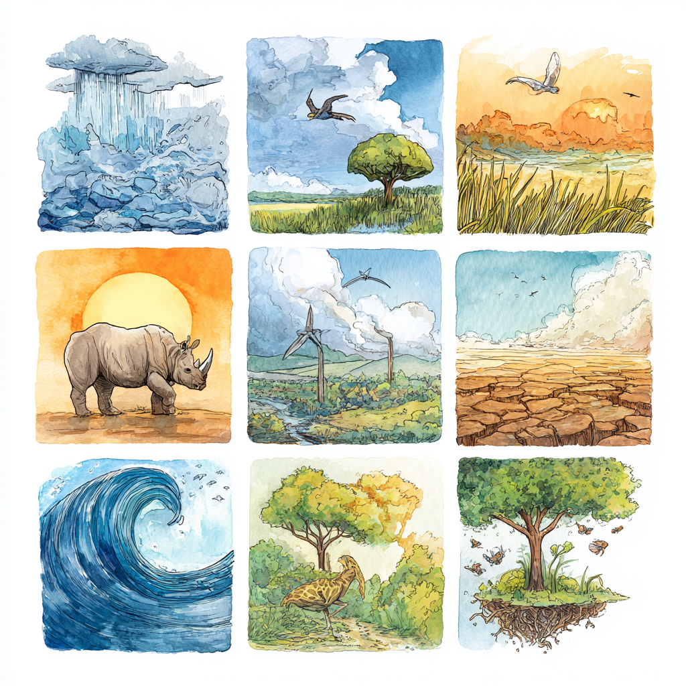

伟大的犀牛侦探故事：科学家如何解开野生动物之谜
引文： Kuiper, T., et al. (2025). 去角可以减少犀牛偷猎. Science, 368, 1075-1081.
第一章：认识神奇的犀牛

在南部非洲温暖的草原上，生活着地球上最雄伟的动物之一——犀牛！这些不可思议的生物就像活的坦克，有着厚厚的灰色皮肤和令人印象深刻的鼻子上的角，这些角可以长得像棒球棒一样长。犀牛是温和的巨人，它们整天吃草，在泥里打滚以保持凉爽。
但是有一个大问题威胁着这些神奇的动物。被称为偷猎者的坏人潜入犀牛的家园偷走它们的角，一些人错误地认为这些角具有魔力。这导致犀牛从野外消失，科学家们对此非常担心。
第二章：昂贵的保护计划

照顾犀牛的人——被称为自然保护主义者——决定他们需要保护他们心爱的动物。他们花费了高达7400万美元（这笔钱足以购买大约1400万个冰淇淋甜筒！）尝试用不同的方法来阻止偷猎者。
他们雇佣了勇敢的巡护员像保安一样在保护区巡逻，训练了能嗅出入侵者的特种犬，安装了能在黑暗中视物的摄像头，甚至使用直升机从空中发现坏人。他们逮捕了700多名偷猎者——这就像把一整所学校都装满了被抓获的罪犯！
但令人惊讶的是：尽管有所有这些惊人的技术和所有这些勇敢的人在努力工作，犀牛仍然在被偷猎。这就像在玩一场无休止的捉迷藏游戏，坏人总能找到新的方法潜行。
第三章：大问题

Timothy Kuiper博士和他的科学家侦探团队有一个大问题：“为什么所有这些昂贵的保护方法都不起作用？”他们研究了11个不同的犀牛家园（称为保护区）长达7年，仔细计算了有多少犀牛是安全的，有多少被偷猎者伤害。
他们的发现就像解开一个巨大的谜题。偷猎者非常坚决，因为犀牛角比黄金还值钱！即使他们知道可能会被抓住，一些人仍然愿意冒险，因为回报是如此巨大。
这就像如果有人给孩子们一百万美元让他们潜入一家糖果店——即使有监控摄像头和保安，一些孩子可能仍然会尝试，因为奖品看起来太诱人了。
第四章：一个惊人的解决方案

然后科学家们尝试了一些完全不同的方法。与其试图抓住小偷，不如拿走小偷想偷的东西？这就是所谓的“去角”——在动物安全睡眠时小心地移除犀牛的角，就像医生移除人的脚趾甲一样。犀牛不会感到任何疼痛，而且角会随着时间的推移慢慢长回来，就像我们的指甲一样。
科学家们与特殊的兽医（动物医生）合作，他们使用链锯小心地在生长区域上方切割犀牛角。他们确保犀牛在此过程中完全睡着，并在之后醒来时感觉良好。
第五章：惊人的结果

接下来发生的事情令人难以置信！当犀牛的角被移除后，偷猎率下降了约78%——这意味着如果以前有100头犀牛被偷猎，去角后只有大约22头被偷猎。这就像偷猎者突然对访问这些地区失去了兴趣，因为那里再也没有什么有价值的东西可偷了。
科学家们发现，有角的犀牛一年内被偷猎的几率为13%，而去角的犀牛只有0.6%的几率——这安全了20多倍！这就像在雷暴中行走和安全地待在房子里的区别。
第六章：为什么效果这么好

去角解决方案之所以奏效，有几个聪明的原因：
- 没有回报，就没有犯罪: 当没有有价值的东西可偷时，大多数偷猎者就不再来了
- 无法被欺骗: 与偷猎者可以通过内部信息避开的摄像头和警卫不同，他们无法让角神奇地重新出现
- 便宜得多: 去角的成本仅占所有保护资金的1.2%，但却是最有效的方法
第七章：仍然存在的挑战

尽管去角效果惊人，但这并非一个完美的解决方案。一些坚决的偷猎者仍然试图伤害去角的犀牛，以获取剩下的小角桩，或者他们等待角长回来一点。这表明犀牛仍然需要巡护员和其他安全措施的保护。
此外，科学家们了解到，定期进行去角效果最好——大约每18个月一次——以确保角保持短小。
第八章：保护野生动物的教训

这个犀牛侦探故事教给科学家们一个关于保护动物的重要教训：有时候，消除坏人想伤害它们的原因，比在他们已经造成伤害后试图抓住他们更好。
科学家们意识到，世界各地的其他保护工作可以从中学习。例如，在委内瑞拉，科学家们在夜间将幼小的鹦鹉转移到安全的地方，以保护它们不被想偷它们当宠物的人偷走。
第九章：犀牛保护的未来

犀牛的故事告诉我们，保护野生动物需要科学家、公园巡护员、兽医和当地社区之间的创造性思维和团队合作。虽然去角非常成功，但科学家们强调，他们仍然需要其他保护方法——这就像你的前门有多把锁而不是只有一把。
研究仍在继续，科学家们致力于寻找更好的方法来保护这些宏伟的动物，并帮助犀牛种群再次变得强大和健康。
总结
这个惊人的侦探故事向我们展示了科学如何帮助解决现实世界的问题。通过仔细研究哪些方法有效，哪些无效，科学家们可以帮助保护濒危动物，并确保子孙后代能够看到犀牛在野外自由漫步。
下次你看到犀牛的照片时，请记住那些每天都在努力保护这些不可思议的生物的敬业的科学家和自然保护主义者！
给年轻科学家的有趣事实
- 犀牛角由角蛋白构成——与你的指甲和头发是同一种材料！
- 去角后，犀牛的角每年可以长回约7厘米
- 世界上只剩下5种犀牛，而且它们都濒临灭绝
- 犀牛已经存在了超过5000万年——它们曾与恐龙生活在同一时代！
你能做什么
- 了解野生动物保护知识，支持保护濒危动物的组织
- 对科学保持好奇心——每一个重大发现都始于有人问“为什么会这样？”
- 记住，即使是微小的行动也能在保护我们星球上神奇的生物方面产生巨大影响！
测试你的知识
得分: 0/3
问题1：根据文章，偷猎犀牛的主要原因是什么？
问题2：文章中讨论的防止偷猎犀牛的主要方法是什么？
问题3：去角犀牛面临的挑战之一是什么？
恭喜！你获得了满分！你是一位犀牛保护专家！
科学汇报：基于证据的反偷猎策略
关键发现
Kuiper及其同事在南部非洲的11个保护区进行了为期7年的分析，结果表明，去角使犀牛偷猎减少了78%，而传统的执法措施尽管花费了7400万美元，却没有显示出统计学上的显著效果。
方法的严谨性
该研究采用了分层贝叶斯回归模型和准实验性回归断点分析，并在不同地点交错实施。这为自然实验条件提供了基础，同时通过与利益相关者的访谈，将定量模型与定性归因方法相结合。
核心发现
- 主动减少回报优于被动执法: 去角仅使用了预算的1.2%，但却是唯一显示出统计学意义的干预措施
- 行为经济学原理得到证实: 确定的回报减少（去角）比不确定的惩罚（执法）更能影响行为
- 成本效益: 每拯救一头犀牛花费7133美元，而传统方法则花费数百万美元
保护意义
这代表了从被动执法到主动减少机会的范式转变——这不仅适用于犀牛保护。该方法展示了情景犯罪预防理论如何为全球野生动物保护策略提供信息。
局限性
对去角动物的持续偷猎（尤其是在克鲁格国家公园），潜在的转移效应，以及需要定期进行维护性去角，这些都突出表明，去角作为综合保护策略的一部分效果最好。
这项工作是循证保护的典范，展示了严格的评估如何能够识别出具有成本效益的干预措施，并挑战传统的野生动物犯罪应对方法。
了解更多
- Dehorning reduces rhino poaching | Science
- Rhino Conservation - Save the Rhino International
- Wildlife Conservation - World Wildlife Fund
- Anti-Poaching Strategies and Technologies
- Rhino Facts for Kids
- Southern African Rhino Conservation
- Behavioral Economics and Conservation
- Situational Crime Prevention in Wildlife Protection
- Greater Kruger Environmental Protection Foundation
- Rhino Recovery Fund - Wildlife Conservation Network